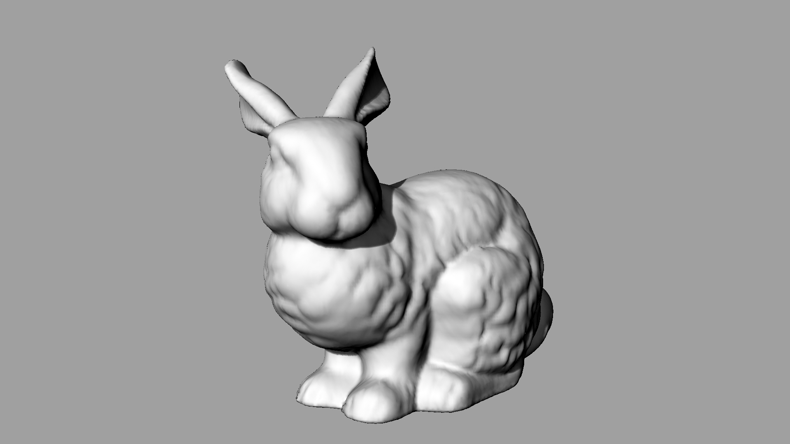

The Stanford Bunny

""""""
from math import radians
import compas
import compas_rhino
from compas.geometry import rotate_points
from compas.datastructures import Mesh
__author__ = ['Tom Van Mele', ]
__copyright__ = 'Copyright 2016 - Block Research Group, ETH Zurich'
__license__ = 'MIT License'
__email__ = 'van.mele@arch.ethz.ch'
# make a mesh from the Stanford bunny PLY file
mesh = Mesh.from_ply(compas.get_bunny())
# rotate the bunny to align it with the Z axis
# display the results in Rhino
points = [mesh.vertex_coordinates(key) for key in mesh.vertices()]
points = rotate_points(points, [1.0, 0.0, 0.0], radians(90))
for index, (key, attr) in enumerate(mesh.vertices(True)):
attr['x'] = points[index][0]
attr['y'] = points[index][1]
attr['z'] = points[index][2]
compas_rhino.mesh_draw_faces(mesh, join_faces=True)
ply
format ascii 1.0
comment zipper output
element vertex 35947
property float x
property float y
property float z
property float confidence
property float intensity
element face 69451
property list uchar int vertex_indices
end_header